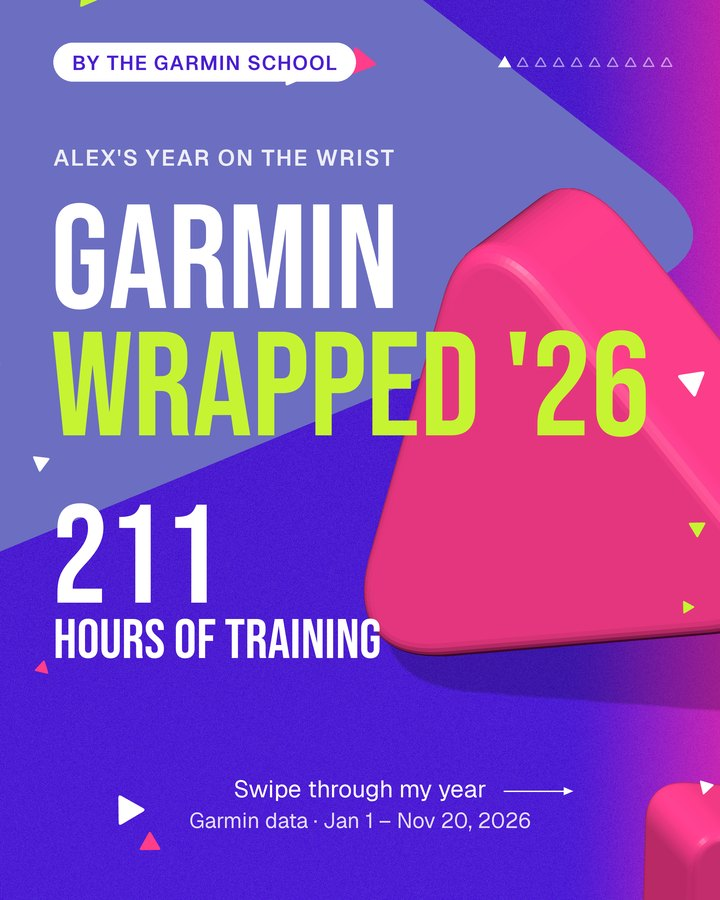
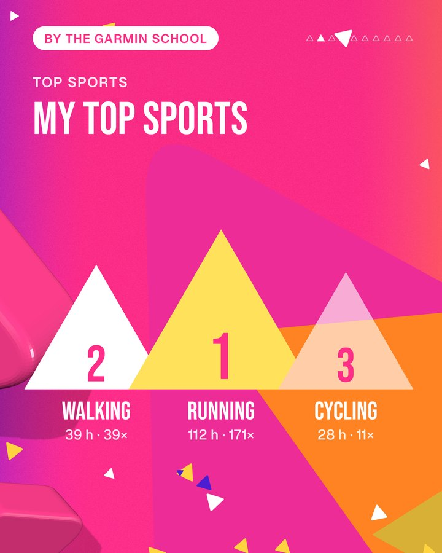
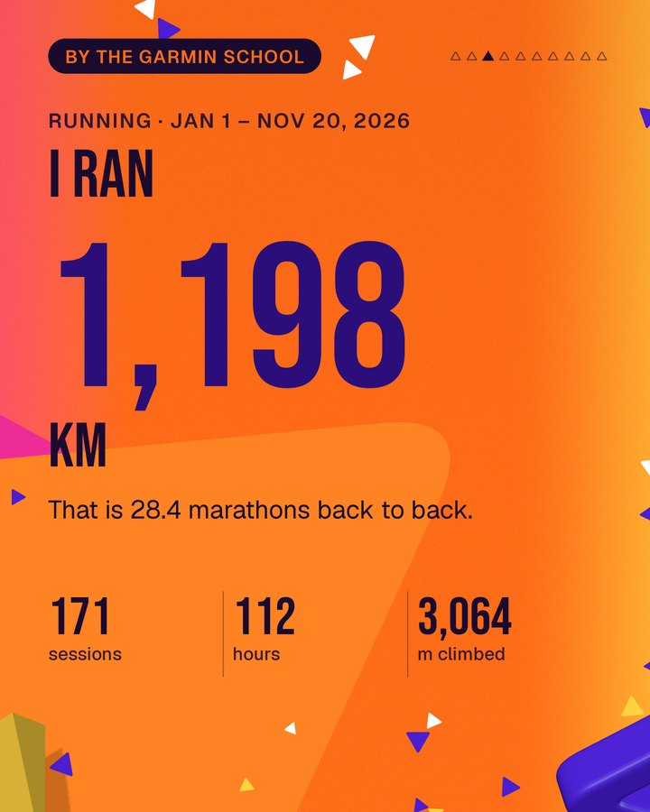
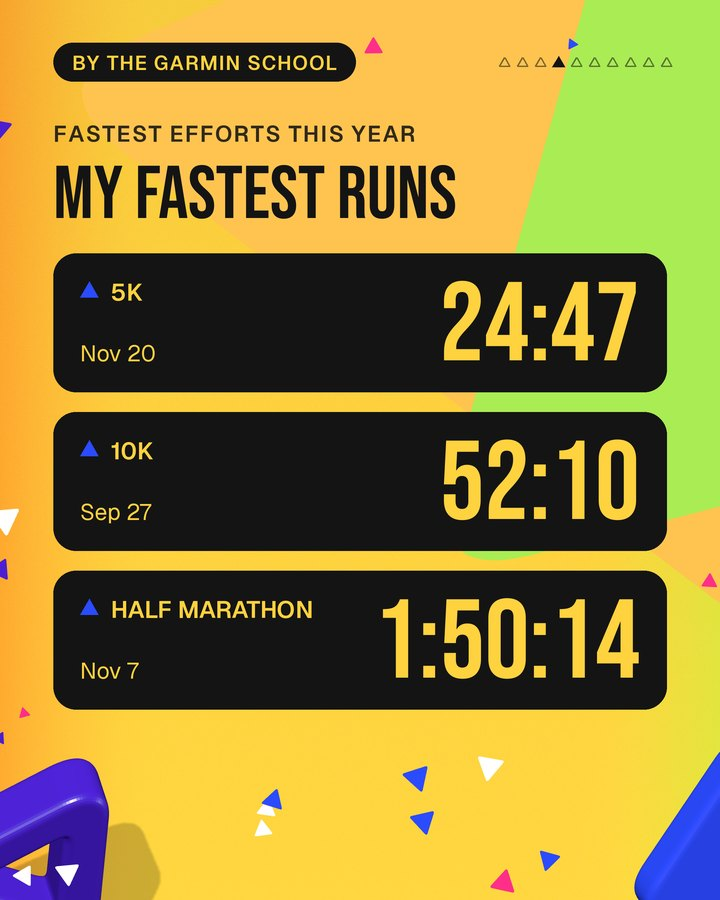
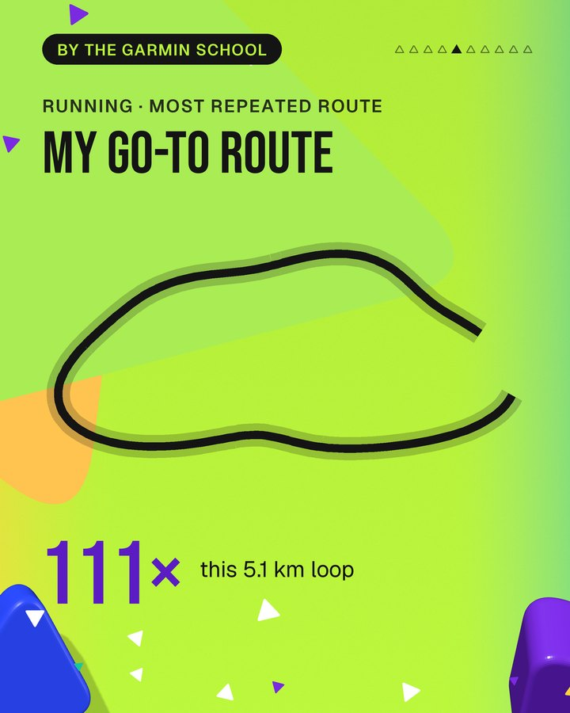
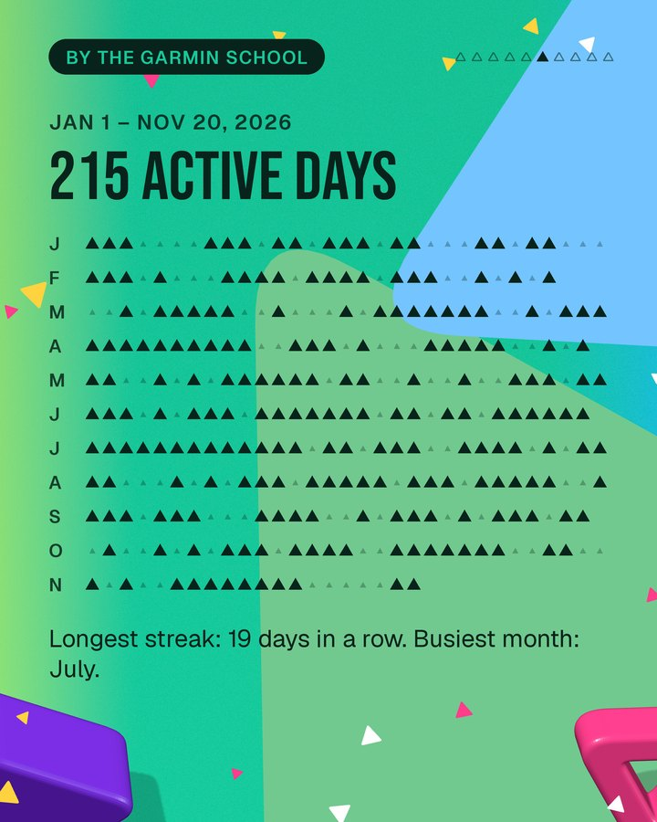
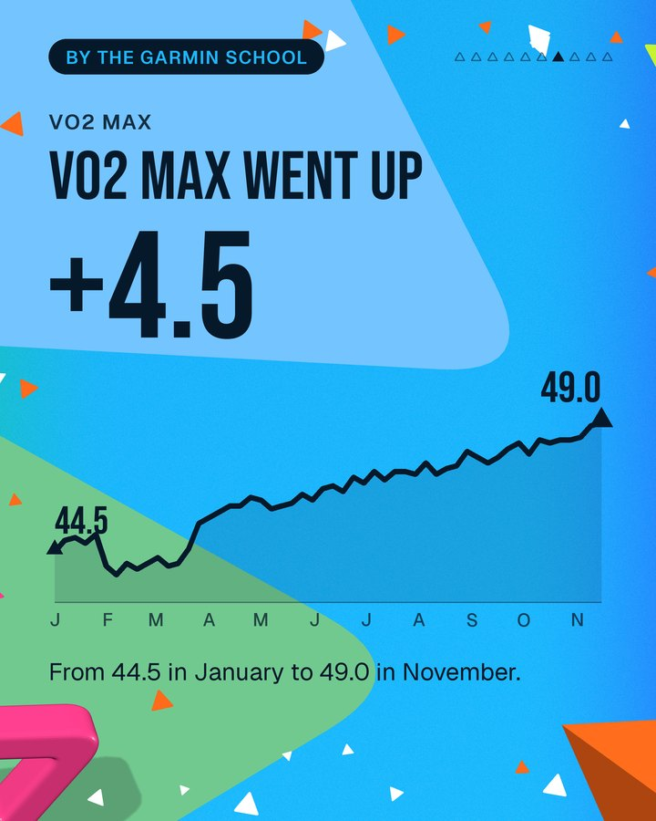
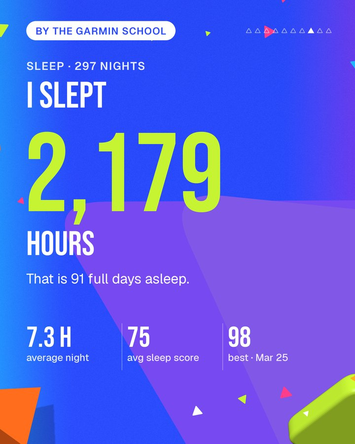
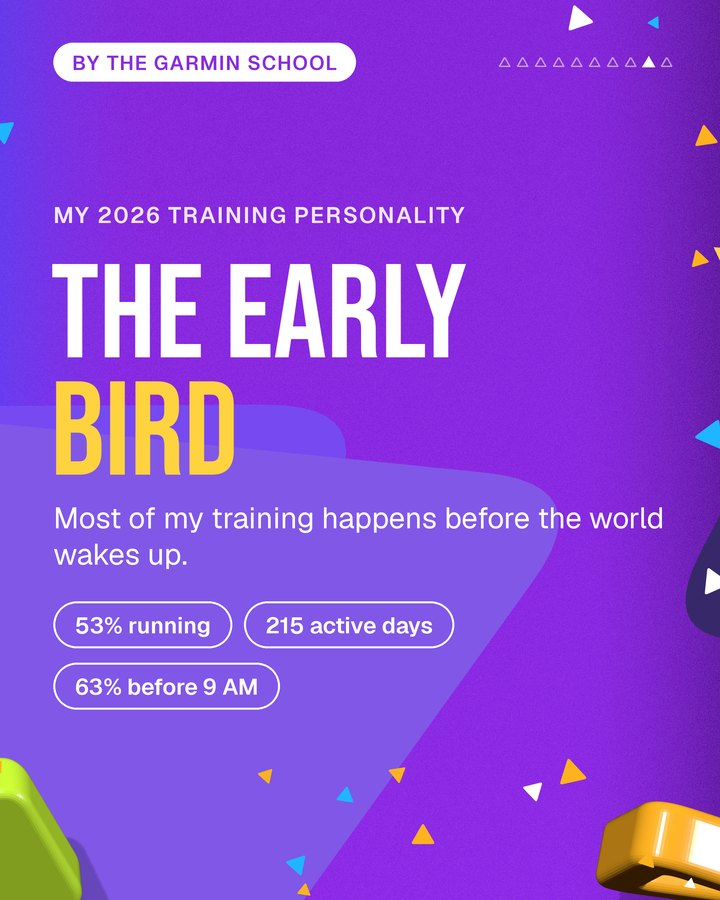
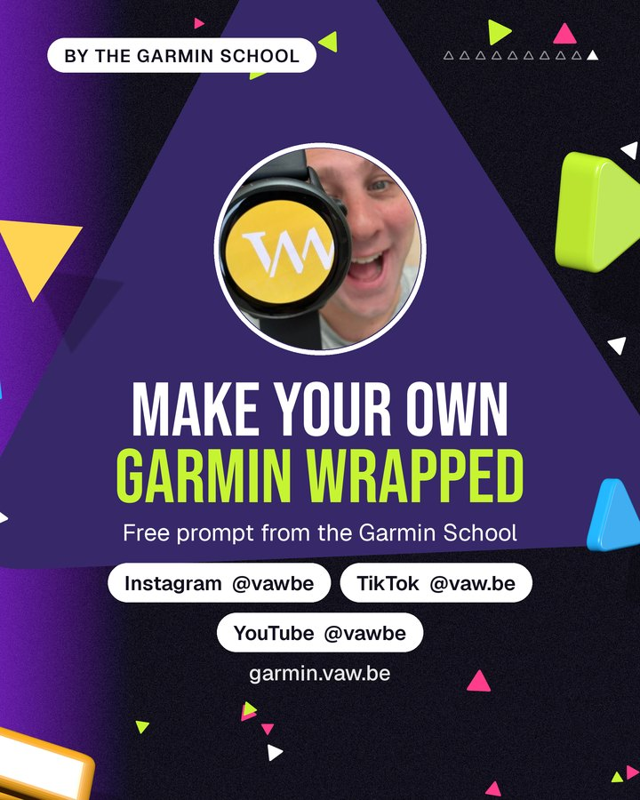

Your year on the wrist as a Spotify Wrapped-style carousel. Paste one prompt into Claude or ChatGPT, and your assistant turns your own Garmin data into 10 slides — stills or animated — for Instagram and TikTok. Free.










Every slide is its own looping video.
Make my **Garmin Wrapped '26**: a 10-slide Instagram/TikTok carousel of my Garmin data from 1 January 2026 until today, in the style of Spotify Wrapped. Use the Garmin School kit so it looks exactly right. **Step 0 — Ask me first, in one short message, then wait for my answer:** 1. Stills (10 PNG images) or animated (10 short MP4 videos that each loop seamlessly)? 2. Which first name should be on slide 1? (Or none.) 3. Can the fitness age slide show my real age next to my fitness age? (yes/no) 4. Metric or imperial? **Step 1 — Get the kit.** In your code environment, download and unzip `https://github.com/wimva/garmin-wrapped/archive/refs/heads/main.zip` (mirror: `https://garmin.vaw.be/wrapped/garmin-wrapped-kit.zip`). If downloading is blocked, ask me to download that zip and upload it here, then continue. Read `kit/SCHEMA.md` before fetching anything. Install what is missing: `pip install pillow imageio-ffmpeg`. **Step 2 — Fetch my data with my Garmin tools** (Jan 1 → today). Follow `kit/SCHEMA.md`: - all activities (page through the activity list, 100 at a time, until you pass 1 January) - daily summaries (steps, floors, resting heart rate, intensity minutes, active calories) - sleep for every night (sleep tools usually give 31 nights per call) - VO2 max history, HRV history, fitness age After each tool call, immediately write **only the fields in SCHEMA.md** into the `data/` files with code. Never paste raw tool output into a file or into the chat, and never invent or estimate a number: if a tool fails or data is missing, leave that part out. **Step 3 — Plan the slides:** run `python kit/compute.py data`. It picks the 8 strongest middle slides for *my* year (a cyclist gets cycling slides, a rower gets rowing, a lifter gets strength). If it prints `routes_to_fetch`, get the GPS polyline of one of those activities, save it to `data/routes/<id>.json` as `[[lat, lon], ...]` and run `compute.py` again. Show me the 10-slide list. You may reword a headline or body in `data/wrapped.json` to make it sound more like me, but keep every number as computed. **Step 4 — Render:** - stills: `python kit/wrapped.py data/wrapped.json --out out --stills --sheet` - animated: `python kit/wrapped.py data/wrapped.json --out out --video --sheet` (render a few slides per run with `--slides 1 2 3` if your environment has a time limit, then the rest; also run `--stills --sheet` once so the contact sheet exists) Open `out/contact_sheet.png` and check every slide: no text cut off or overlapping, numbers match my data. Fix and re-render any slide that's wrong. **Step 5 — Deliver:** give me the files from `out/` (and a zip of them), in order 01 → 10, plus a short caption for my post that ends with "Made with the Garmin School prompt (@vawbe)". Don't use official Garmin logos anywhere. **Privacy (always):** no weight, BMI, body composition, menstrual or food data, no addresses, no maps. The route slide shows only the shape of the line, with the first and last 200 m removed.